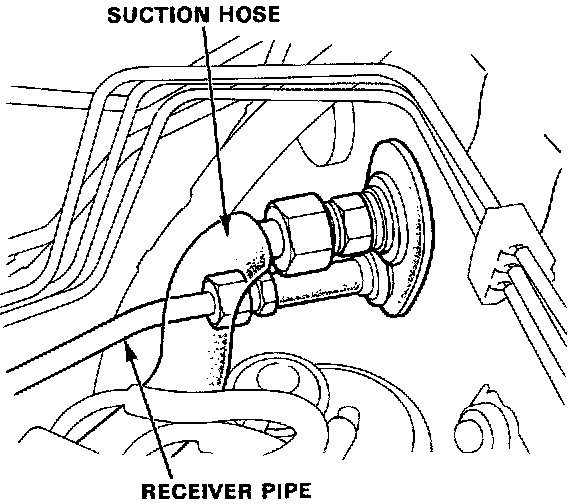
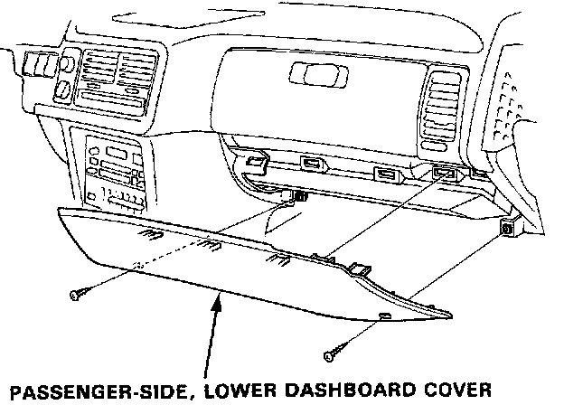
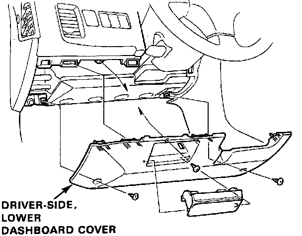
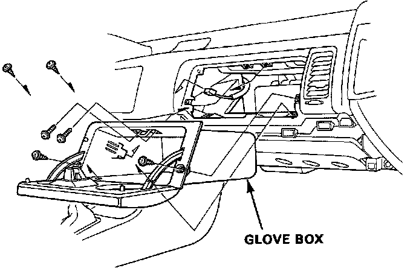
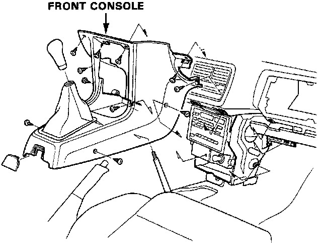
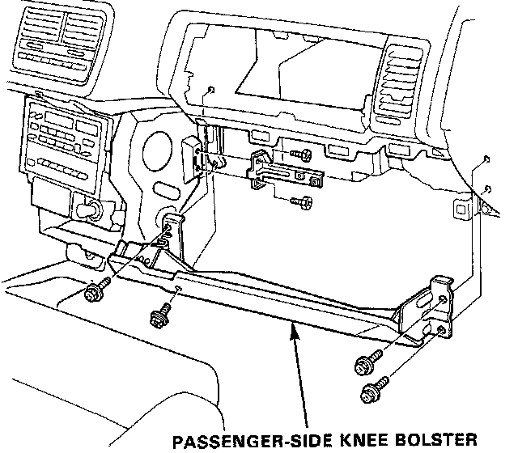
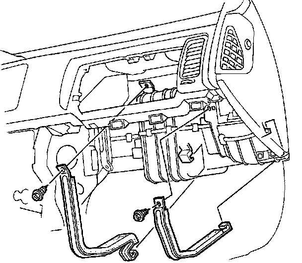
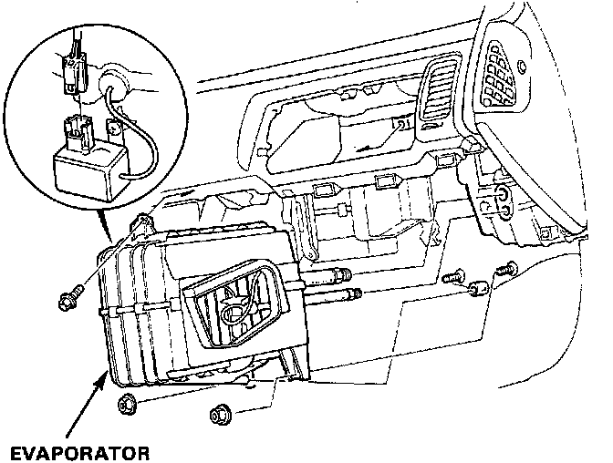

Evaporator Removal and Installation
Evaporator Replacement1. Disconnect the battery negative terminal.
2. Discharge the refrigerant.

3. Disconnect the receiver line and suction hose from the evaporator.
CAUTION: Cap the open fittings immediately to keep moisture out of the system.

4. Remove the passenger-side, lower dashboard cover.

5. Remove the driver-side, lower dashboard cover.

6. Remove the glove box.

7. Remove the front console.

8. Remove the passenger-side knee bolster.

9. Remove the self-tapping screws (2) and A/C bands.
Disconnect the connector from the thermostat switch and pull off the wire harness from the clamps.

10. Remove the evaporator.
11. Install in the reverse order of removal, and:
^ Apply a sealant to the gromments.
^ Make sure that there is no air leakage.
^ Charge the system and test performance.